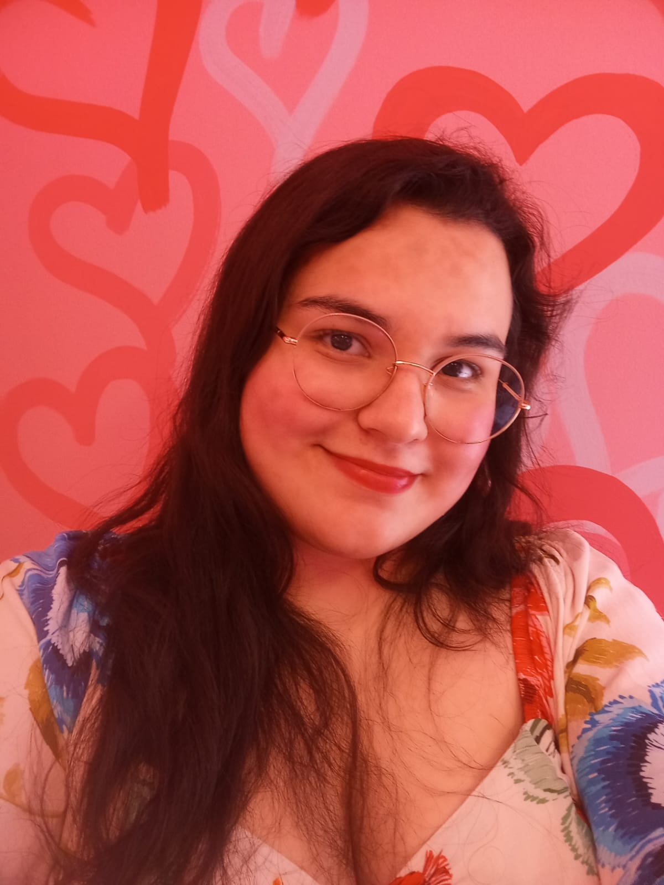

Sobre Mim
Olá! Meu nome é Maria Eduarda e sou apaixonada por Gatos, Anime, Jogos e Kpop. Tenho experiência em HTML, CSS, JavaScript e estou sempre buscando aprender novas tecnologias e criar soluções inovadoras. Fora do trabalho, gosto de jogar videogames, assistir filmes e séries e ouvir musica.
Habilidades
- HTML5
- CSS3
- JavaScript Básico
Entre em Contato
Você pode me encontrar nas seguintes plataformas:
- Email: mariaeduardan995@gmail.com
- LinkedIn: linkedin.com/in/maria-eduarda-nepomuceno-alves
- GitHub: github.com/MariaEduarda-Nepo